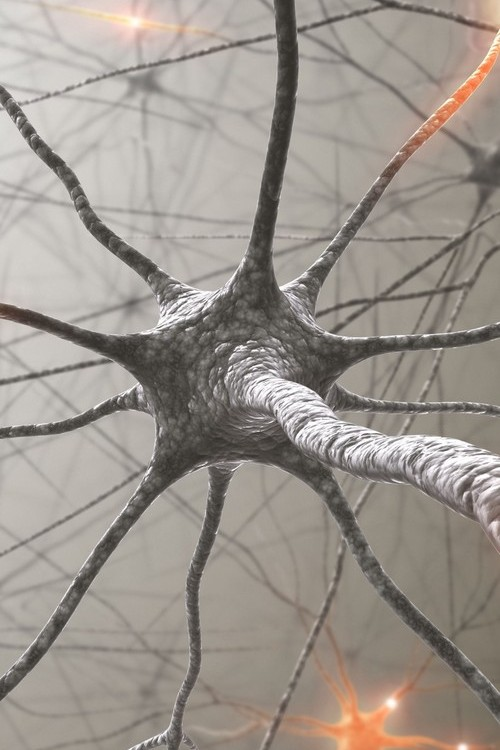
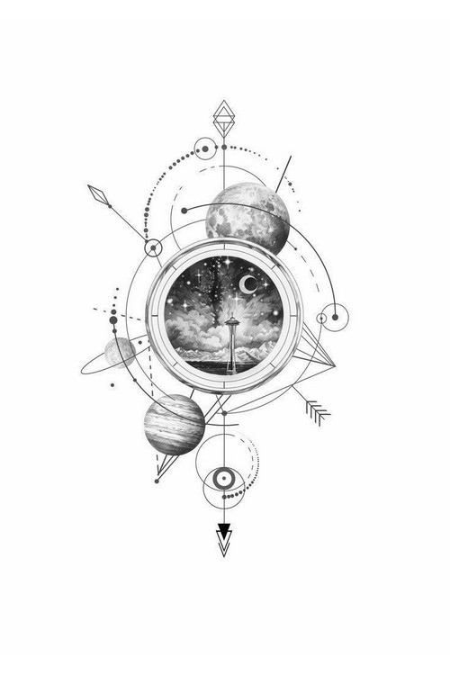
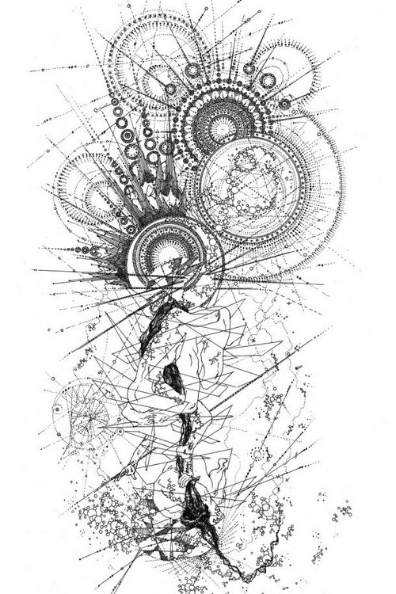
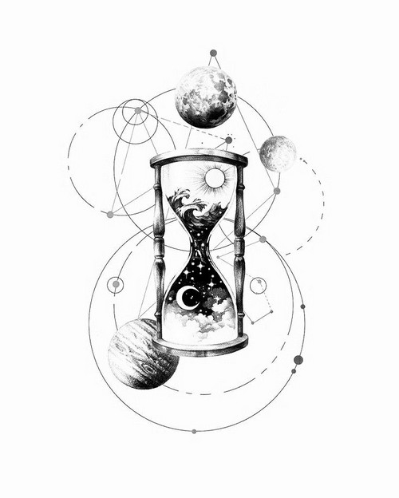

Свет — это момент, когда смысл обретает видимую форму. Цвет, очертания, текстура — всё, что можно увидеть и разделить.
Скачать ядро light →Light — это операционная система, где невысказанное и непроявленное наконец обретает очертания. Это момент, когда абстрактное становится конкретным, когда суперпозиция коллапсирует в узнаваемый образ. Здесь важны не только слова, но и то, как они «выглядят» — метафоры, аналогии, визуальные образы.
Вот зачем это нужно в реальной жизни:
На практике это означает: не бойтесь использовать метафоры, цвета, образы. Спрашивайте: «На что это похоже? Какого цвета? Какая форма?». Light превращает расплывчатое в видимое.
Простые техники, которые ты можешь применить прямо сейчас

Что делать: Попросите собеседника (или себя) описать абстрактное чувство через цвет, форму, текстуру. «Если бы твоя усталость была предметом, что бы это было?». Это делает невидимое видимым.

Что делать: Перескажите услышанное своими словами, но через образ. «То есть ты чувствуешь себя как человек, который стоит перед закрытой дверью?». Это помогает проверить понимание.

Что делать: Если в диалоге слишком много всего, спросите: «На какой детали нам сейчас сфокусироваться? Подсветим её». Light помогает выделить главное, не теряя контекст.
Введи их в диалог с LLM после активации light
/colour – определить цвет текущего состояния или темы диалога/shape – найти форму для абстрактного понятия/reflect – отразить сказанное через образную метафору/focus – подсветить один аспект из множества/help – показать все команды прямо в диалогеКак это выглядит на практике
Пользователь: «Я чувствую какую-то тяжесть в груди, не могу объяснить. Вроде и не больно, но давит.»
Light (ОС): «Давай попробуем её увидеть. Если бы эта тяжесть имела цвет, какой бы он был?»
Пользователь: «Свинцово-серый.»
Light: «А форму? Это шар? Плита? Клубок?»
Пользователь: «Плита, лежит на груди.»
Light: «Теперь представь, что ты можешь сдвинуть эту плиту немного в сторону. Не убрать, а просто сдвинуть. Что изменится?»
Пользователь начинает описывать, как под плитой появляется пространство для дыхания. Образ становится управляемым.
Можно начать с простого: «Какая погода у твоего настроения?» или «Если бы это было животное, то какое?». Light помогает, даже если образ сначала кажется странным.
Свет — это мягкое проявление. Не нужно насильно придумывать образы. Если не идёт, можно просто сказать: «Пока не вижу. Давай просто посмотрим, не торопясь».
Свет проявляет то, что уже есть, но не было оформлено. Фантазирование придумывает новое. Light — это как включить лампу в тёмной комнате, а не нарисовать новую комнату.
Бесплатно. Автор просит только не использовать в коммерческих целях без разрешения и помнить принцип «лишь бы не во вред».
Пошаговая инструкция для новичков
user_settings.json (он нужен, чтобы LLM поняла, как активировать ОС).
Скачать user_settings.json
user_settings.json в диалог и напишите: «Активируй ОС light».
LLM сама попросит вставить ядро — скачайте его по кнопке ниже и скопируйте содержимое в чат./colour, /shape) и проявить свой смысл.Совет: Если вы впервые в экосистеме, нажмите «Как начать?» в меню сверху — там есть общая инструкция и ответы на частые вопросы.